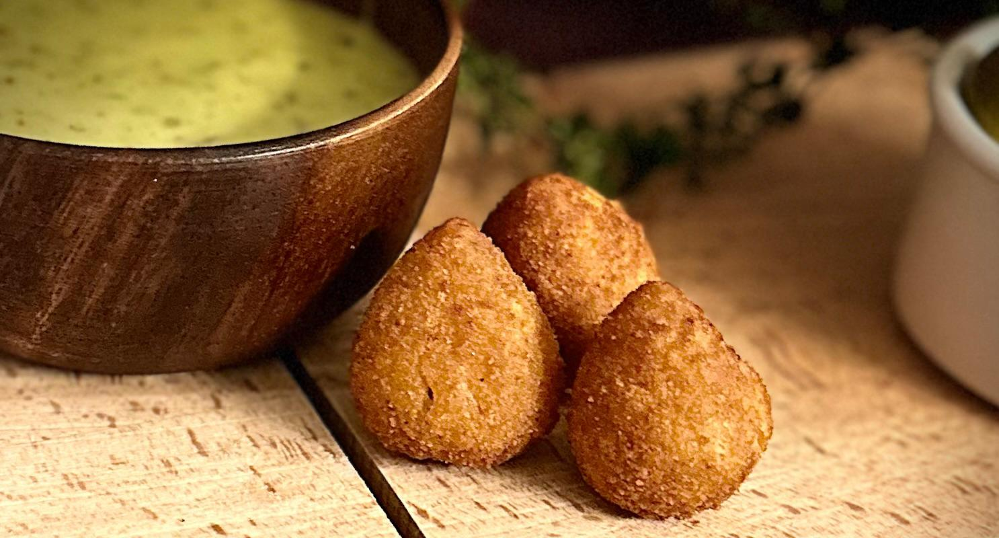
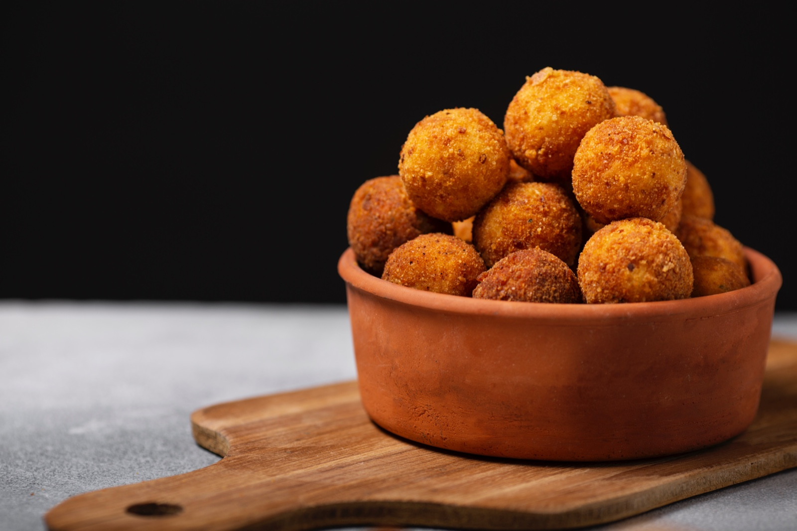
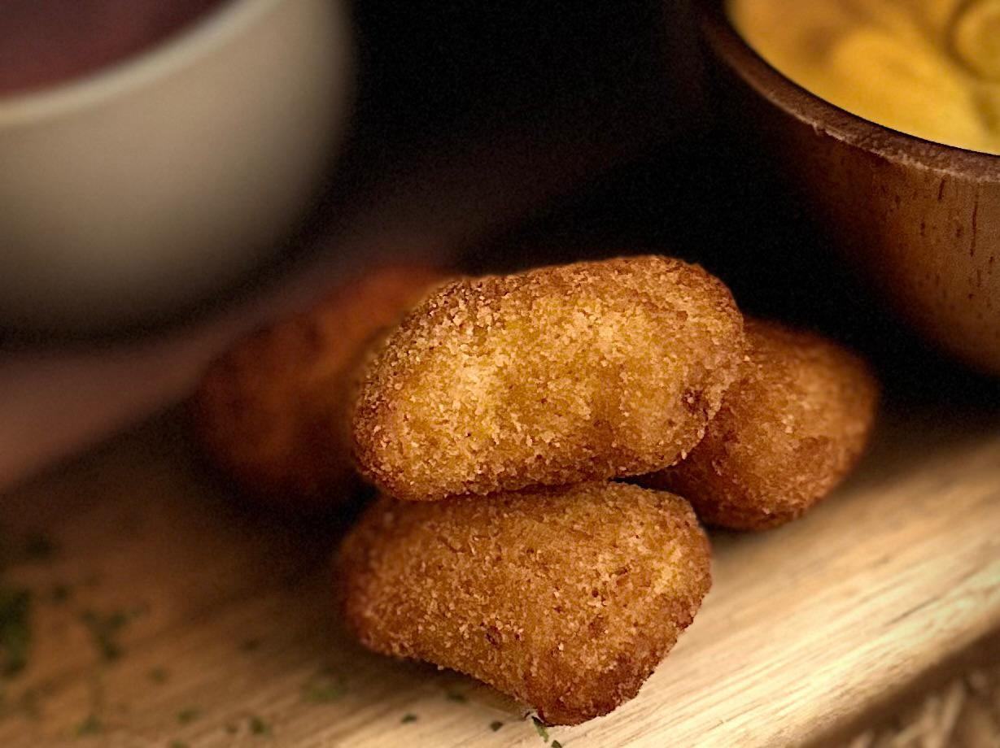
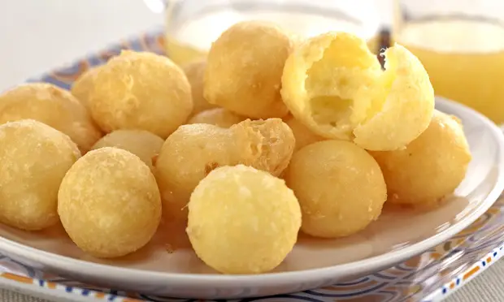
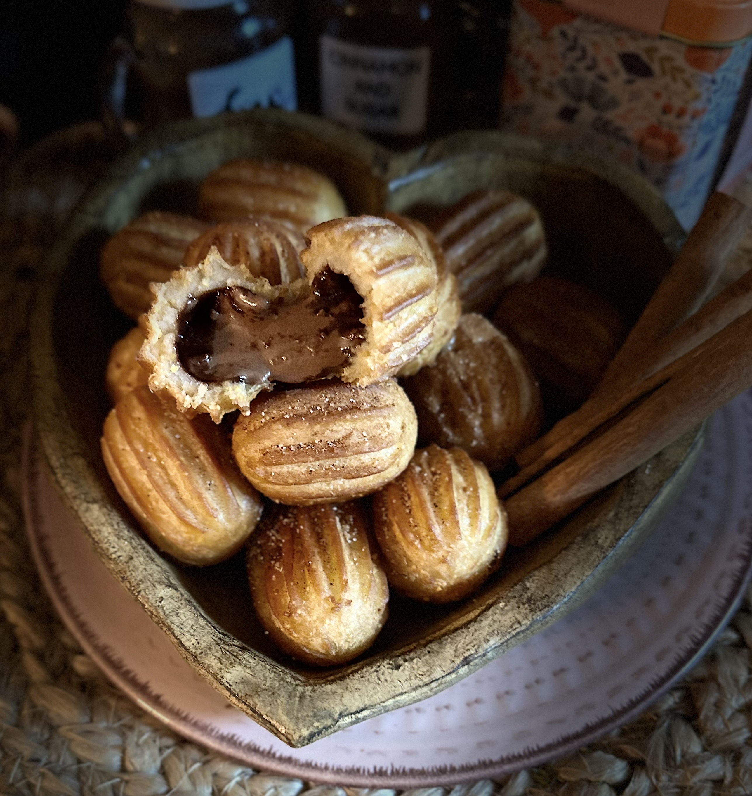
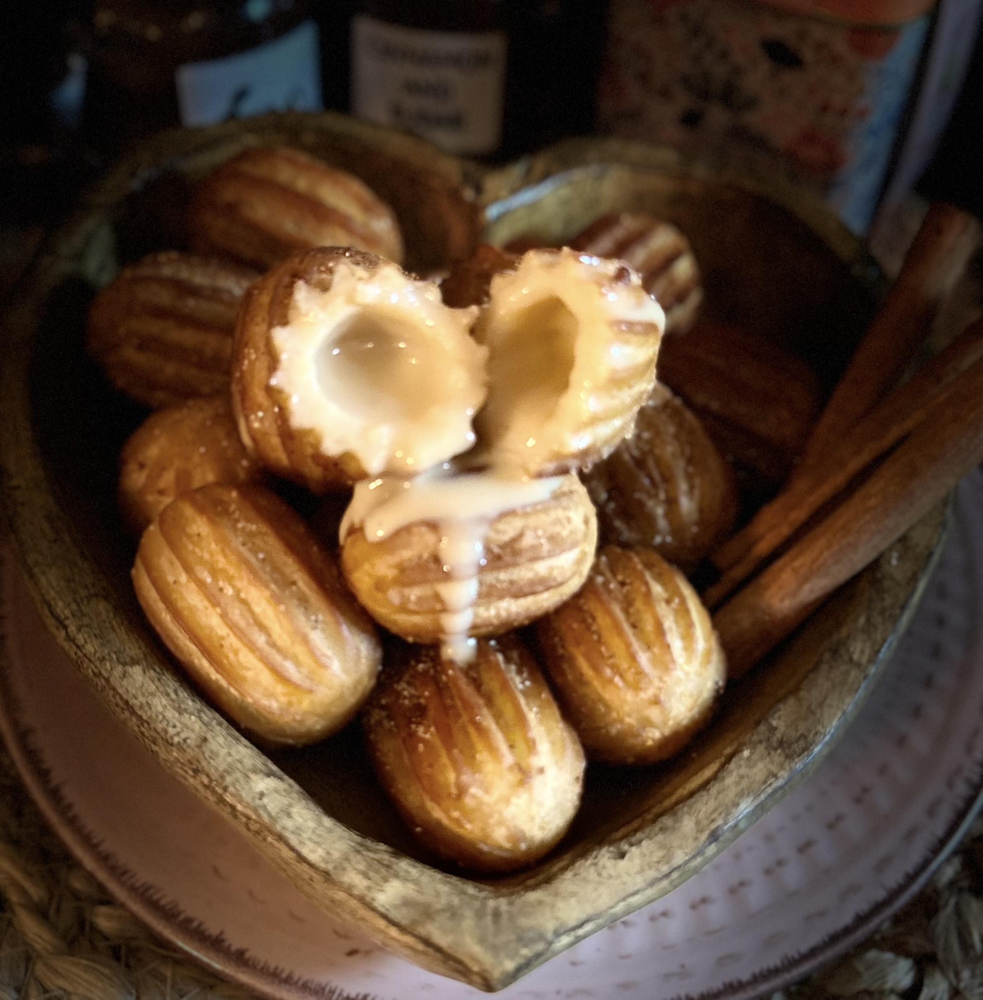

Our Lovely Products
Chicken Bites
A comforting, savory treat that’s crisp on the outside and tender within. We start with a smooth potato dough, then fill it with slow-cooked shredded chicken, seasoned simply with natural herbs and aromatics for a clean, home-style taste. Each piece is coated in fine breading and fried to a light golden color, creating a thin, pleasing crunch that gives way to the soft and flavorful center. Perfectly sized at about 30 grams, they’re a warm and satisfying bite that feels both new and familiar.
Also available in Buffalo Chicken Bites Flavor!

Cheese Bites
In 1801, John Leland of Cheshire, Massachusetts, presented President Thomas Jefferson with the first recorded cheese ball, weighing 1,235 pounds and made from milk sourced from 900 cows.
Rolling it across the White House lawn, Leland showcased his patriotism and gratitude for religious freedom, proudly declaring its creation without the aid of slaves.
Fast forward to 1944, amidst wartime party restrictions, the smaller, more manageable cheese ball gained popularity.
Today, our Cheese Bites feature Mozzarella and parmesan cheese wrapped in the same potato dough as the Chicken Bites, offering a delightful twist on this American favorite.

BBQ Bites
A warm, satisfying bite with a deep, smoky heart. We wrap a tender, slow-cooked pulled pork filling in our smooth potato dough, seasoned generously with a rich hickory BBQ blend that brings a gentle sweetness and just the right hint of campfire smoke. Each piece is coated in fine breading and fried to a pale golden crisp, giving you that light crunch before the soft, savory center. It is a hearty little bite that feels both comforting and bold.

Cheese Bread Bites
A small bite with a big, cheesy pull. We blend mild mozzarella and sharp provolone into a delicate dough made from cassava starch, creating a smooth, elastic center that stays wonderfully light and stretchy. Instead of baking, we fry each one until it puffs up with a thin, airy crust that gives way to a soft, warm core full of melted cheese. They're a simple, golden treat that's crisp on the surface and irresistibly chewy inside. Gluten-free and vegetarian, it's a feel-good bite everyone can gather around.
Also available Stuffed with Bacon and Chedar, Strawberry Jelly or Milky Caramel!

Sweet Bites
A golden, crispy and sweet shell with a soft, tender heart, made to be filled with something wonderful. We fry each one until lightly crisp on the outside and pleasingly tender within, then dust it with cinnamon sugar for a warm, familiar sweetness. The real delight is the filling inside, and you can choose from three: a smooth, creamy milk caramel slow-cooked to a rich, velvety sweetness; a classic hazelnut chocolate spread; or a sweet, tangy strawberry cheesecake cream that balances fruit and richness in every bite. Each bite is a warm, hand-held dessert that feels both comforting and just a little bit special.


Corn Bites
A fun, handheld classic made perfectly bite-sized. We wrap a juicy, seasoned mini hot dog in a golden cornbread batter that fries up with a lightly sweet, tender crumb and a satisfying crisp outer shell. Each piece is just the right balance of savory and subtly sweet, warm all the way through, and impossible to eat just one of. Simple, nostalgic, and made to be shared.